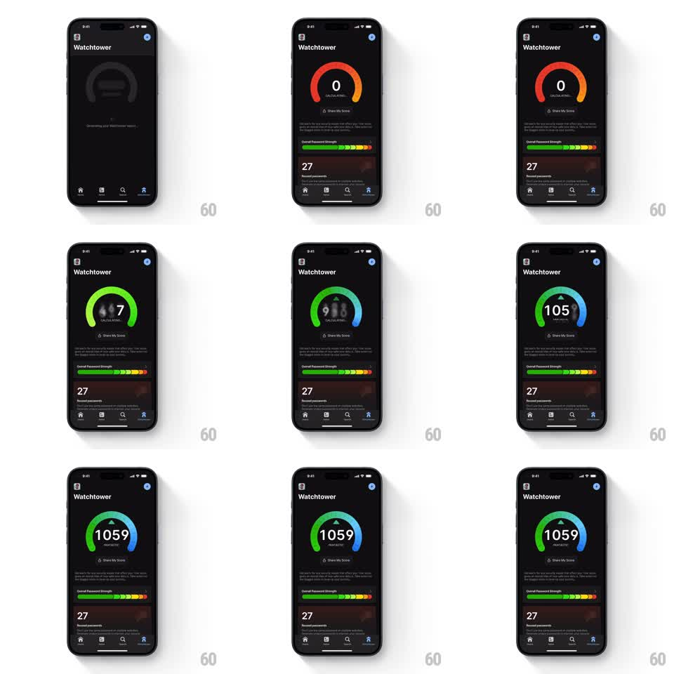

Media
Frame-by-frame

Rebuild this animation 1:1: 1Password Watchtower's security score meter - a sweeping arc gauge that fills while the score digits ticker upward in a blurred roll, landing on the final rating.

Rebuild this animation 1:1: 1Password Watchtower's security score meter - a sweeping arc gauge that fills while the score digits ticker upward in a blurred roll, landing on the final rating.
## Integration
Integration: stack-agnostic spec - springs given as stiffness/damping, timed motions as duration + curve; map every value to your framework and animation library of choice.
## Scene
Dark Watchtower screen. Center: a large semicircular arc gauge with the score numeral inside and a status label beneath ("CALCULATING..." then "FANTASTIC"). The arc's gradient runs red/orange at low values through green to teal/blue at high. Below: an "Overall Password Strength" segmented bar and a reused-passwords card.
## Motion spec
Pattern: gauge sweep + odometer digit roll.
- The arc sweeps from 0 to the final score over ~2.2s (ease-out cubic), its gradient revealing continuously so the hue travels red to green to blue as it fills.
- The center numeral is an odometer: digits roll vertically at high speed with strong motion blur, decelerating as the arc slows; each digit settles with a soft 100ms spring (~500/30), ones digit last.
- The status label holds "CALCULATING..." with an ellipsis pulse (3 dots cycling opacity, 900ms loop) until the digits settle, then crossfades to the rating word (200ms).
- The segmented strength bar below fills left to right in sync with the arc (same eased progress), each segment popping on (scale 0.8 to 1, 120ms).
- A small chevron appears above the final numeral on completion (fade + 4px rise, 200ms).
## Calibration
- Total count-up ~2.2-2.6s regardless of score size; big scores roll faster, not longer.
- Digit blur is vertical only and proportional to roll velocity.
## Reduced motion
Arc fills over 400ms without blur; number counts in 3 steps.
## Don't miss
- The arc hue must track the fill position (red at the start even for a high final score) - it is a progress gradient, not a fixed color.
- "CALCULATING..." never shows the final number early.